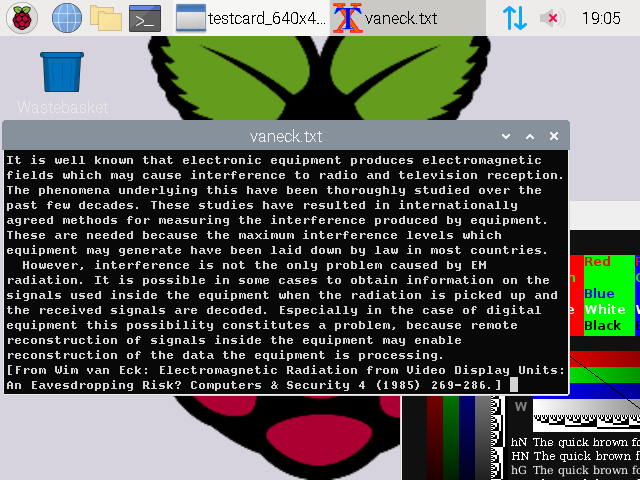
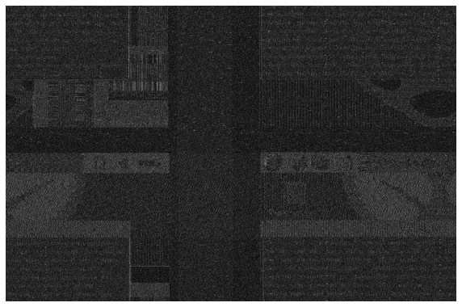
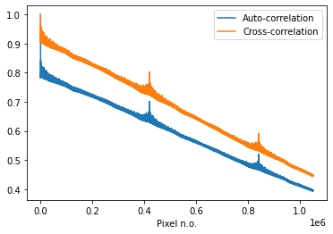
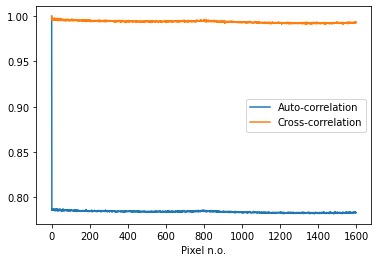
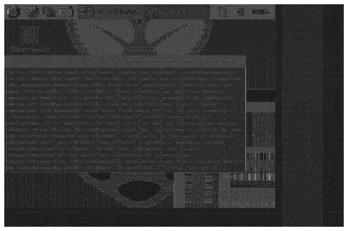
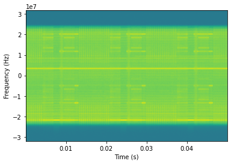
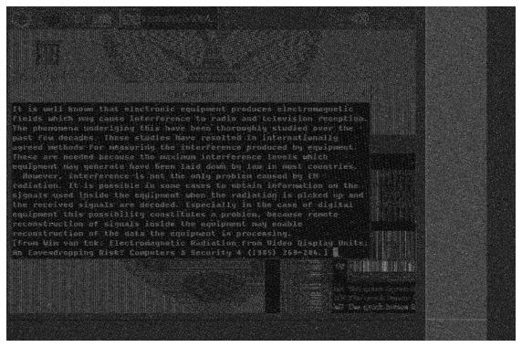
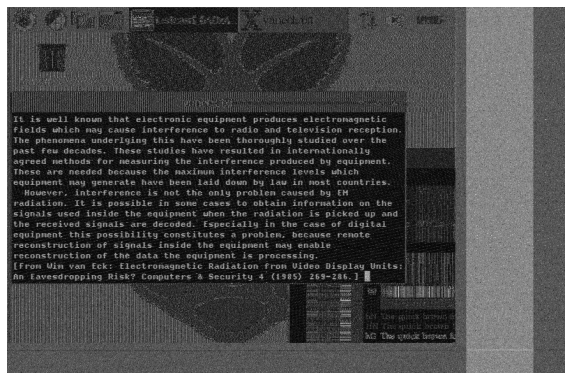
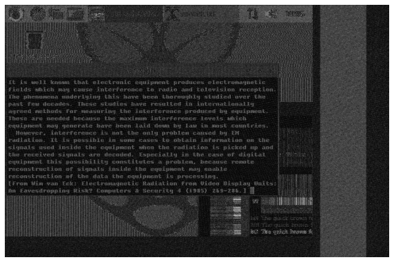

Abstract
‘van Eck phreaking’ is a side-channel attack involving eavesdropping on a computer display through analysis of correlations in emitted electromagnetic radiation. This report provides background information, covers the analysis procedure, and sucessfully demonstrates this attack up to a distance of 4 metres from a HDMI cable. By processing IQ samples of fixed-bandwidth data at different centre frequencies recorded by an antenna, further analysis reveals that it is indeed possible, through averaging methods, to reconstuct an image that is sufficiently clear to read text on the screen. This has profound and widespread security implications, with security agencies such as the NSA developing the TEMPEST specification to prevent attacks of this nature from compromising secure information.
Introduction
This report reveals that it is indeed possible to eavesdrop on a displayed video feed, and read terminal text, by making use of correlations between the displayed video feed and the associated electromagnetic radiation emitted from a HDMI cable.
We record over a one second duration the emitted radiation and associated background noise from the HDMI cable at a range of different centre frequencies with a fixed bandwidth and sampling frequency. With prior knowledge of the pixel clock, the screen resolution, and blanking intervals, all of which are included within the HDMI protocol, we proceed to reconstruct some approximation to the displayed image by down-sampling our signal to the pixel clock frequency.
Separate frames are aligned by applying minor adjustments to the pixel clock frequency. We take cross-correlations of our down-sampled signal to automate, and verify our adjustments to the pixel clock frequency. We simulate and apply additional noise to model a longer eavesdropping distance to reveal the impact of the image. We then make all the frames coherent, and apply coherent averaging to improve the image quality. We attempt all of the above at different centre frequencies. We observe that it is indeed possible to align and coherently average frames to obtain an image that is sufficiently clean to read text on the screen, provided that the background noise isn’t too large.
In order to perform the necessary digital signal processing on the data to obtain an image, we make heavy use of the python libraries: scipy.signal, numpy, and matplotlib.
Background
Named after dutch security researcher, Wim van Eck, ‘van Eck phreaking’ is a side-channel attack to obtain otherwise hidden signals via their correlations with detected electromagnetic radiation that is emitted from a target system. In 1985, van Eck published an analysis of the security considerations associated with the emissions from CRT monitors. Van Eck revealed that it was possible to eavesdrop on the image displayed from a distance of hundreds of metres away with only $15 of radio equipment. It was previously thought that only security agencies could only accomplish this with very expensive equipment.
The term ’phreaking ’originates from eavesdropping, hacking and compromising telephone networks. It is used colloquially to refer to the eavesdropping element of the side channel attack. The research produced by van Eck and others in this area has resulted in fortification measures being taken for the purposes of security. Both the NSA, and NATO have produced the TEMPEST (Telecommunications Electronics Materials Protected from Emanating Spurious Transmissions) specification, to prevent the leakage of electromagnetic radiation from secure sources.
Theory
IQ samples
A receiving antenna will pick up radiation at bandwidth, \(B\), at some centre frequency, \(f_c\). The associated band-pass readings are then down-shifted in frequency to the base-band by multiplication with a phasor. In this process, IQ samples are obtained. In this process, the sample rate, \(f_s\) is preserved. We obtain an in-phase, \(I(t)\), and quadrature \(Q(t)\) component to each sample. Each sample therefore has an associated amplitude, and phase, and may be represented as a phasor.
We can reason about this process in continuous space: \[\begin{aligned}
z(t) &= \text{lowpass}(x(t)e^{-i\omega_c t}, B) \\
&= I(t) + iQ(t) \\\end{aligned}\] More appropriately, we may make the process above discrete for individual samples: \[\begin{aligned}
z_n &= \text{lowpass}(x_ne^{-2\pi i f_c \frac{n}{f_s}}, B) \\
&= I_n + iQ_n\end{aligned}\] Our original band-pass signal, \(x_B(t)\) is related to our in phase, and quadrature signals accordingly: \[\begin{aligned}
x_B(t) &= \Re{(z(t)e^{i\omega_c t})} \\
&= \Re(z(t))\cos{\omega_c t} - \Im{(z(t))}\sin{\omega_c t} \\
&= I(t)\cos{\omega_c t} - Q(t)\sin{\omega_c t} \end{aligned}\]
Experimental Details
HDMI protocol
The HDMI protocol transmits the displayed video frame by frame, line by line, from left to right, one pixel at a time. The data for a single pixel is transmitted in a time period reciprocal to the pixel clock frequency \(f_p^{-1}\). After the image portion of a line is transmitted, the rest of the line is comprised of a horizontal blanking interval, where the remaining pixels may encode audio data, and mark the start of a new line. After the image portion of a full frame is transmitted, the remaining pixels in the frame comprise the vertical blanking interval, which exists to give the receiving device time to process and display the frame before it starts receiving the next one. Given a transmitting mode of some screen resolution and refresh rate, there is an associated pixel clock frequency, horizontal blanking interval, and vertical blanking interval.
As the current in the HDMI cable fluctuates, radiation is emitted. The frequency of radiation emitted is the same as that of the periodic fluctuation, and the amplitude is proportional to that of the amplitude of current fluctuation. Thus, we will observe greater signal strengths corresponding to pixels with a higher average RGB value. This is crucial for image reconstruction.
Setup
We output a HDMI signal from a Raspberry Pi at a transmitting mode of \(640x480@60Hz\).
Relevant information of the HDMI protocol of this display mode is below: \[\begin{aligned}
\text{Mode:}\quad\, & 640\text{x}480\;@\;60\;\text{Hz} \\
\text{Pixel Clock: } f_p &= 25.175 \pm 1\% \text{ MHz} \\
\text{Horizontal size: } x_t &= 800 \text{ px} \\
\text{Vertical size: } y_t &= 525 \text{ px}\end{aligned}\] The image displayed contains a desktop environment with a command-line terminal emulator running. We use a Schwarzbeck VUSLP 9111B-039 log-periodic antenna, with a spectral range of (\(200-3000\text{ MHz}\)), attached to a Rohde & Schwarz FSV7 signal analyzer, configured to output IQ pairs. The antenna is placed 1 metre away from the HDMI cable. This setup is shown here. Crucially, we expect to measure both the radiation correlating with the signal from the HDMI cable, and background noise of frequencies corresponding to other devices in the room, and other interference effects.

Information about the Antenna is as follows; \[\begin{aligned}
\text{Sampling frequency: } f_s &= 64 \text{ MHz} \\
\text{Bandwidth: } B &= 40 \text{ MHz} \\
\text{Centre frequencies: } f_c &= \{225, 250, ..., 475\} \text{ MHz} \end{aligned}\]
Analysis
Data Format
We obtain data files consisting of IQ samples. The IQ samples are stored in a binary file sequentially as 4 byte floats. These may be read directly from the file. This is performed with the function in the code below.
def load_scene(count, fps, fc_mhz, noise=False):
name = "noise" if noise else "scene3";
dat_filename = f"{name}-640x480-60-{fc_mhz}M-64M-40M.dat"
T = count/fps; # Time length to read
IQ_COUNT = int(np.ceil(T * SAMPLE_RATE)); # Total no. of IQ samples
data = np.fromfile(dat_filename, dtype='<f4', count=IQ_COUNT*2);
data = data if data.size % 2 == 0 else data[:-1]; # Force even length
real = data[0::2]; # Every alternate number, offset 0
imag = data[1::2]; # Every alternate number, offset 1
iq = real + 1.j*imag;
return iq, fc_mhz;Naive Approach
We start with the centre frequency of \(425\,\text{MHz}\). After reading the data, we resample it to the pixel clock. As such, each index of our resampled array should correspond to an individual pixel on the screen. To resample our data, we apply a hamming window to our fourier transformed data in frequency space to remove the appropriate high frequency components before truncating the frequency space representation and transforming back. This is performed by the scipy.signal.resample function. Lastly, we truncate our pixel array to length \(p_t=x_t \times y_t\), and fill in a 2D array line by line. We plot the magnitude of the phasor for each pixel. This is shown below). The relevant code for this is as follows:
TOTAL_FRAMES = 1;
f_p = 25_175_000; # 25.175 MHz (Estimate sample rate)
z, _ = load_scene(TOTAL_FRAMES, 425, noise=False); # Load 1 frame at 425MHz centre
f_r = f_p; # Set resample rate to pixel clock
z_rs = scipy.signal.resample(z, int(z.size*(f_r/SAMPLE_RATE)), window='hamming');
frame = z_rs[:p_t].reshape((y_t, x_t)); # Truncate array, fill frame
# Plot abs of phasors for a frame.
plt.imshow(np.abs(frame), cmap='gray');Further processing is clearly required to make the text in the image legible, in the further sections, we will remove the shear, obtain an appropriate offset, and attempt to average multiple frames to reduce the noise.
Alignment
Shear
Since the image is sheared backwards, we deduce that the pixel clock needs to be increased. We adjust the pixel clock to \(f_p = 25.175\text{ MHz} + 25 \text{ kHz}\) to align a single frame. In order to make our determined pixel clock as accurate as possible, we increase the sensitivity of our heuristic method fifty-fold by stitching the half of the first and fiftieth frames together). A one-pixel deviation between the first and second frame will now be magnified to a fifty-pixel deviation. Thus, we adjust our pixel clock to:
\[ f_p = 25.175\text{ MHz} + 25.099 \text{ Hz} \]
We obtain a perfectly shear-aligned image over 50 frames. This will be useful in the future for the purpose of averaging frames to remove noise. This pixel clock is independent of the centre frequency that the data is obtained from, and thus requires no further case-by-case modification. The necessary code for stitching frames is below:
# TOTAL_FRAMES=50 in code to load image
z_st = np.copy(z_rs); # Copy resampled array
z_f1 = z_st[:p_t];
z_st = np.roll(z_st, -p_t*(TOTAL_FRAMES-1)); # Move to last frame
z_fL = z_st[:p_t];
frame_s = np.concatenate((z_f1[:z_f1.size//2], z_fL[z_fL.size//2:]))
.reshape((y_t, x_t));
Offset
Despite the fact that our pixel clock is now appropriately set, the first pixel in our readings is not the top-left pixel on the image displayed on the monitor. Since there are \(x_t\) samples in one line. Shifting the image offset to the \((x, y)\) coordinate on the screen involves moving to the \(x + y \times x_t\) index of the array. We observe that the top-left coordinate of the image is sufficiently close to \((260, 450)\) as shown below.
Unfortunately, since the antenna was collecting data at different centre frequencies at different starting times, there will be a different top-left coordinate for data from a different centre frequency on a case-by case basis which must be determined heuristically, with manual tweaking by observation and experimentation. The code for applying the offset is below:
# Set a for loaded centre frequency from lookup table
a = OFFSET_A[fc_mhz];
z_rs = np.roll(z_rs, -a); # Move to appropriate index Correlation
Determining \(x_t, p_t\)
We load and resample 10 frames and take the auto-correlation of the first 5, and the cross-correlation between the first and last 5. From the peaks of the auto-correlation, we may deduce the line size, \(x_t\), and frame size, \(p_t\), of our image. From the periodic peaks of the plots (Figure \[fig:s3-ac-10\]), we correctly deduce that:
\[\begin{aligned} x_t &= 800\text{ px} \\ p_t &= 420000\text{ px} \end{aligned}\]
The peak at \(x_t=800\) corresponds to the resampled reciprocal of line frequency \(f_h^{-1}\), the peak at \(p_t\) corresponds similarly to the frame frequency \(f_v^{-1}\) The code for performing correlations is below:
# Auto-correlation (first 5 frames)
ac = scipy.signal.correlate(np.abs(z_rs[:p_t*5]), np.abs(z_rs[:p_t*5]), method='fft');
ac = ac[ac.size//2:]; ac = ac/ac[0]; # Process plot
# Cross-correlation (first 5 & last 5)
cc = scipy.signal.correlate(np.abs(z_rs[p_t*5:]), np.abs(z_rs[:p_t*5]), method='fft');
cc = cc[cc.size//2:]; cc = cc/cc[0]; # Process plot
plt.figure();
plt.plot(np.arange(x_t*4), ac[:x_t*4], label="Auto-correlation");
plt.plot(np.arange(x_t*4), cc[:x_t*4], label="Cross-correlation");
plt.figure();
plt.plot(np.arange(ac.size), ac, label="Auto-correlation");
plt.plot(np.arange(cc.size), cc, label="Cross-correlation");Crucially, we observe that the cross-correlation plot has more identifiable peaks, but some constant added. Thicker noise in the plot between the \(x_t\) peak exists due to the auto-correlation of noise in the same & multiple lines of the same image. The cross-correlation plot is higher due to the difference in overall noise structure between the first and last 5 frames. We take the correlation of the intensity/abs of each pixel to disregard the phase information, otherwise the correlation plots will oscillate due to phase variations in the image.

Shear automation
By calculating correlations, the heuristic method for determining the pixel clock may be automated. This can be accomplished by interval bisection. For some estimate of \(f_p\), if our \(x_t\) peak exceeds the x-coordinate of \(800\), \(f_p\) must be decreased, and the opposite applies conversely. If we repeat this process, we focus in on an appropriate value of \(f_p\).
f_p_U = 25_175_000+2_517_500; # f_p+1\%
f_p_L = 25_175_000-2_517_500; # f_p-1\%
for i in range(10):
f_r_est = (f_p_U+f_p_L)/2; # Test for midpoint
z1 = np.copy(z); # Calculate autocorrelation for one frame
rs = scipy.signal.resample(z1, int(z1.size*(f_r_est/SAMPLE_RATE)), window='hamming');
ac = scipy.signal.correlate(np.abs(rs), np.abs(rs), method='fft');
ac = ac/np.max(ac); ac = ac[ac.size//2:];
idx=x_t//2+np.argmax(ac[x_t//2:3*x_t//2]);
print("Iteration: ",i+1,idx);
if idx > x_t: # if index of peak exceeds x_t
f_p_U = f_r_est; # reduce next f_r
elif idx < x_t: # if index of peak precedes x_t
f_p_L = f_r_est; # increase next f_r
else:
print("Optimal Frequency: ", f_r_est);
print("% Deviation from original: ", ((f_r_est-25_175_000)/25_175_000) * 100);
print("% Deviation from perfect: ", ((f_r_est-f_p)/f_p) * 100);
break;
# OUTPUT: ...
# Iteration: 7 800
# Optimal Frequency: 25214335.9375
# % Deviation from original: 0.15625
# % Deviation from perfect: 0.05649556178330886While the result isn’t perfect, no human intervention is required to obtain a result that is around 0.05% off the perfect value obtained for the pixel clock. This is more than enough to fix the shear within an individual frame.
Eavesdropping distance
A larger eavesdropping distance than a metre may be modelled by adjusting the noise of the signal. The received power of dipole radiation falls off by \(\frac{1}{r^2}\), and therefore the received amplitude falls off by \(\frac{1}{r}\). As such the background noise signal, \(n(t)\) at \(r=1\text{\,m}\) may be thought to become \(n(t, r) = n(t) \times r\), as a function of distance. Given appropriate scaling, this is identical to the situation where we consider attenuation of the true signal from the wire. We assume that the background noise is Gaussian, and we obtain a standard deviation from out background readings and use this to model and characterise our noise which we add to our data to simulate a larger eavesdropping distance.
With this model, we observe that an eavesdropping distance exceeding 4-5m is too much to recover a clear signal. This can be verified by looking at the frame cross-correlation plots.
# load z, TOTAL_FRAMES = 2;
# load noise
zn, _ = load_scene(TOTAL_FRAMES, f_p/p_t, 425, noise=True);
f1 = np.copy(z_rs[:p_t]);
fL = np.copy(z_rs[p_t*(TOTAL_FRAMES-1):p_t*TOTAL_FRAMES]);
# Average std for x and y of noise phasors
noise_std = np.mean([np.std(np.real(zn))), np.std(np.imag(zn))]);
# Apply model
std = noise_std*(eavesdrop_distance-1);
# Apply noise to IQ samples
f1 += np.random.normal(scale=std, size=f1.shape);
f1 += np.random.normal(scale=std, size=f1.shape)*1.j;
fL += np.random.normal(scale=std, size=fL.shape);
fL += np.random.normal(scale=std, size=fL.shape)*1.j;

Naive averaging
We perform an incoherent average (with no prior phase unrotation) of 10 frames at a \(425\text{ MHz}\) centre frequency, where destructive interference between the phasors comprising each pixel results in the image dimming, and an average of the abs, which reduces noise but does not improve the clarity of text. This can be seen below.
# load z @ 425M, TOTAL_FRAMES=10
FRAMES = np.array([z_rs[p_t*i:p_t*(i+1)]) for i in range(TOTAL_FRAMES)]);
#FRAMES = np.abs(FRAMES); # Uncomment for z_m = AVG of ABS of FRAMES
z_m = np.mean(FRAMES, axis=0).reshape((y_t, x_t));
Coherent Averaging
To view the phase for each pixel, we perform a HSV plot of the image, where the phase is the hue, the saturation is set to 1, and the value is set to the amplitude of the phasor.
def frame_hsv(frame):
frame = frame/np.max(np.abs(frame)); #Normalize
# Linearly map range [-pi,pi] to [0,1]
H = (((np.angle(frame)/np.pi)+1)/2).reshape((y_t, x_t));
S = np.ones((y_t, x_t)); # Max saturation
V = np.abs(frame).reshape((y_t, x_t));
z_m2 = np.concatenate(([np.copy(H)], [np.copy(S)], [V]));
z_m2 = np.moveaxis(z_m2, 0, 2);
import matplotlib.colors
z_m2 = matplotlib.colors.hsv_to_rgb(z_m2);
return z_m2;
plt.imshow(frame_hsv(z_rs[:p_t]));
In order to perform coherent averaging, we must ensure that the phase is the same at the start of each pixel. Further, to improve the clarity of the text, we shift our centre frequency to that of the pixel clock, one of the two bright lines in the spectrogram below To finely adjust the frequency shift, we use identical code to the heuristic \(f_p\) alignment earlier, attempting to match the hue of the first, and last frame. In this section, we perform coherent averaging with a centre frequency of \(425\text{\,MHz}\), as the image looks significantly better. We can automate this process by performing a low-pass filter of the phase angle across multiple frames. We seek to remove the steepest low-frequency peak. This can, again, be accomplished by interval bisection, similarly to the method of automatically determining \(f_p\).
#f_k = [HEURISTICALLY DETERMINED SHIFT FREQUENCY]
z, f_mhz = load_scene(TOTAL_FRAMES, f_p/p_t, 400, False)
f_s = f_k;
z = z * np.exp(1.j * 2*np.pi * f_s/SAMPLE_RATE * np.arange(z.size));
# DOWNSAMPLE AND PLOT HSV/ABS, PERFORM NAIVE AVERAGEResults
Alternative centre frequencies
To obtain coherent averages at alternative centre frequencies, we can calculate our major frequency shift from \(f_k\) determined for one centre frequency. Crucially, we must still use our heuristic method to determine the appropriate minor frequency shift to guarantee phase coherence across all frames before averaging, and plotting the absolute values.
Out of our best plots, it is clear that the signal at \(f_c = 400\text{ MHz}\) is the most clear. Both the text in the terminal, and ‘the quick brown f’, at the bottom right, can be read from the image.
No signal was obtained from centre frequencies \(f_c = 225, 250\text{ MHz}\). As a result, no further processing was performed with these.



Conclusion
We deduce that it is indeed possible to eavesdrop on a HDMI signal by analysing the radio spectrum with an antenna a metre away. While the standard van Eck phreaking attack involves eavesdropping on the display output of CRT monitors, it is still possible to detect the associated correlations in the radiation emitted by a HDMI cable upon the transmission of an image.
While it is possible to detect some form of intensity for the pixels, this is not the true brightness of the pixels and it is not possible to obtain any information about the color of the pixels.
Moreover, since sufficient accuracy can be obtained from the signal for that of a single frame, it should in principle be possible to eavesdrop on a display in real-time. This can be done by feeding the antenna output, for the most appropriate center frequency, into an FPGA with a custom hardware pipeline to process the data in real-time.
Appropriately encrypted data has a uniform probability distribution, and will therefore resemble noise. As such, an attack of this nature can be mitigated with private keys stored in the monitor hardware, and a public-key encrypted video feed transmitted through the HDMI cable. However, this comes with an associated computational barrier and performance penalty.